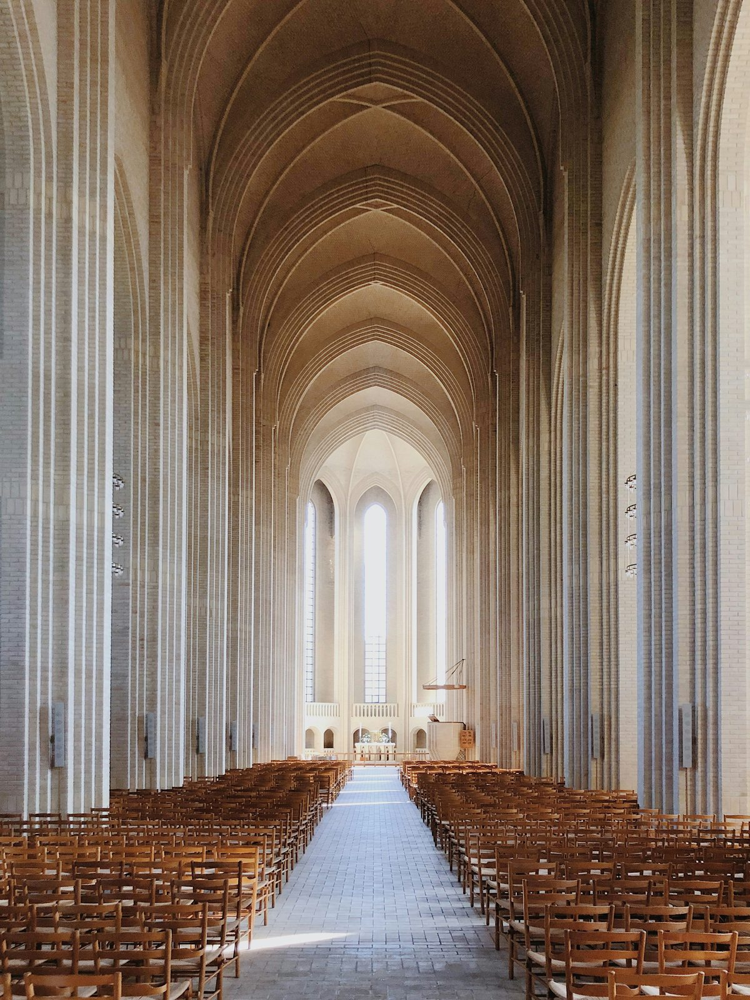

Our Story
Born Out of a Vision,
Planted in the Bronx
DOXA Sanctuary is a vibrant, Spirit-filled church located in the Bronx, New York, proudly part of the global family of TOP Ministries International. We are not just a congregation; we are a movement of believers who have been called, commissioned, and sent to bring the glory of God to one of the most dynamic cities in the world.
The name DOXA comes from the Greek word meaning "Glory," and that is the very heartbeat of everything we do. We exist to express God's glory in worship, in service, in leadership, and in every corner of our community. From the streets of the Bronx to the nations of the earth, DOXA Sanctuary carries a mandate that is both local and global.
As a branch of TOP Ministries International, we are rooted in a legacy of apostolic vision, sound doctrine, and Spirit-empowered ministry. We stand on the shoulders of a ministry that has touched countless lives across the globe, and we carry that same fire right here in New York.
Visit Us in the Bronx